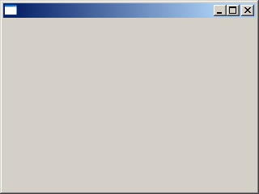
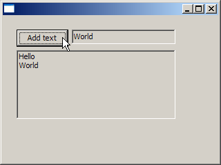
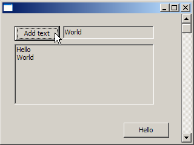

Session 1
Overview of the IDE, building from the command line, simple Windows application
The main topic of this session was to present the IDE environment and show how a minimal windows application is built.
A "bare-bones" Windows application:
| Manual1.cpp | Form1.cpp | |
|---|
#include <vcl.h>
USEFORM("Form1.cpp", theForm);
WINAPI WinMain(HINSTANCE, HINSTANCE, LPSTR, int)
{
Application->Initialize();
Application->CreateForm(__classid(TForm), &theForm);
Application->Run();
return 0;
}
|
#include <vcl.h>
TForm *theForm;
|
|
Compile (You can compile both at the same time as well):
bcc32 -c Manual1.cpp
bcc32 -c Form1.cpp
Link (all on one line):
ilink32 -x -L"C:\Program Files (x86)\Borland\BDS\4.0\lib\debug;C:\Program Files (x86)\Borland\BDS\4.0\lib;C:\Program Files (x86)\Borland\BDS\4.0\lib\obj"
c0w32.obj Manual1.obj Form1.obj,Manual1.exe,,rtl.lib vcl.lib import32.lib cp32mt.lib,,
The application at runtime: (Exciting, eh?)

There are batch files to build everything and to just link the program. You can
download all of the files in this zip.
A slightly more complicated application. It demonstrates deriving a form from the base class TForm and creating components (objects) at runtime in the constructor.
| Manual2.cpp | MyForm2.cpp |
|---|
#include <vcl.h>
USEFORM("MyForm2.cpp", MyForm2);
WINAPI WinMain(HINSTANCE, HINSTANCE, LPSTR, int)
{
Application->Initialize();
Application->CreateForm(__classid(TMyForm2), &MyForm2);
Application->Run();
return 0;
}
|
#include <vcl.h>
#include "MyForm2.h"
#pragma resource "*.dfm"
TMyForm2 *MyForm2;
__fastcall TMyForm2::TMyForm2(TComponent* Owner) : TForm(Owner)
{
AddText = new TButton(this);
AddText->Parent = this;
AddText->Left = 20;
AddText->Top = 20;
AddText->Caption = "Add text";
Edit = new TEdit(this);
Edit->Parent = this;
Edit->Left = AddText->Left + AddText->Width + 5;
Edit->Top = AddText->Top;
Edit->Width = 150;
ListBox = new TListBox(this);
ListBox->Parent = this;
ListBox->Left = AddText->Left;
ListBox->Top = AddText->Top + AddText->Height + 5;
ListBox->Width = AddText->Width + Edit->Width + 5;
ListBox->Height = 100;
AddText->OnClick = ClickButton;
}
void __fastcall TMyForm2::ClickButton(TObject *)
{
ListBox->Items->Add(Edit->Text);
}
|
| MyForm2.dfm (Resource file) |
|---|
object MyForm2: TMyForm2
end
|
| MyForm2.h |
|---|
class TMyForm2 : public TForm
{
private:
TButton *AddText;
TEdit *Edit;
TListBox *ListBox;
public:
__fastcall TMyForm2(TComponent* Owner);
void __fastcall ClickButton(TObject *);
};
|
The application at runtime:

You can download all of the files in this zip.
Another slightly more complicated application. It demonstrates creating components in the resource file
(and handled in the __published section of the class).
| Manual3.cpp | MyForm3.cpp |
|---|
#include <vcl.h>
USEFORM("MyForm3.cpp", MyForm3);
WINAPI WinMain(HINSTANCE, HINSTANCE, LPSTR, int)
{
Application->Initialize();
Application->CreateForm(__classid(TMyForm3), &MyForm3);
Application->Run();
return 0;
}
|
#include <vcl.h>
#include "MyForm.h"
#pragma resource "*.dfm"
TMyForm3 *MyForm3;
__fastcall TMyForm3::TMyForm3(TComponent* Owner) : TForm(Owner)
{
AddText = new TButton(this);
AddText->Parent = this;
AddText->Left = 20;
AddText->Top = 20;
AddText->Caption = "Add text";
Edit = new TEdit(this);
Edit->Parent = this;
Edit->Left = AddText->Left + AddText->Width + 5;
Edit->Top = AddText->Top;
Edit->Width = 150;
ListBox = new TListBox(this);
ListBox->Parent = this;
ListBox->Left = AddText->Left;
ListBox->Top = AddText->Top + AddText->Height + 5;
ListBox->Width = AddText->Width + Edit->Width + 5;
ListBox->Height = 100;
AddText->OnClick = ClickButton;
}
void __fastcall TMyForm3::ClickButton(TObject *)
{
ListBox->Items->Add(Edit->Text);
}
|
| MyForm3.dfm (Resource file) |
|---|
object MyForm3: TMyForm3
object Button: TButton
Caption = 'Hello'
Left = 200
Top = 180
end
object Scroll: TScrollBar
Kind = sbVertical
Align = alRight
Width = 16
end
end
|
| MyForm3.h |
|---|
class TMyForm3 : public TForm
{
__published:
TButton *Button;
TScrollBar *Scroll;
private:
TButton *AddText;
TEdit *Edit;
TListBox *ListBox;
public:
__fastcall TMyForm3(TComponent* Owner);
void __fastcall ClickButton(TObject *);
};
|
The application at runtime:

You can download all of the files in this zip.
- Try these examples on your own. This will tell you if you have installed the IDE correctly on
your computer.
- I spent some time during the presentation talking about all of the things that are
wrong (from a usability perspective) with this very simple application that copies the text from the edit box (TEdit) into the
list box (TListBox) when the user clicks the button (TButton).
I then discussed various ways that these usability problems could be solved and implemented some of them.
Re-create this application and solve some of the problems any way you see fit. (Note: This is a little challenging since I
haven't really talked a lot about how to work in the IDE yet. However, some of you might be up for the challenge.) Reminder: Some of the
issues are that I mentioned:
- You can only copy the text to the list box using the mouse and clicking the button. (Should be able to do it with the keyboard)
- Text persists in the edit box after being copied. (Clear it? Highlight it? Something else?)
- The focus is on the button when the application first starts. (Should be in the edit box)
- Allows empty lines to be copied. (Should this be allowed? Also, think about leading/trailing spaces and if they are desirable.)
- Maybe disable (grey-out) the button when the edit box is empty and enable it if there are characters present.
(Hint: look at the OnChange event of the edit box)
- Make sure the edit box and list box get properly resized when the window is resized.
- Other things as you see fit...